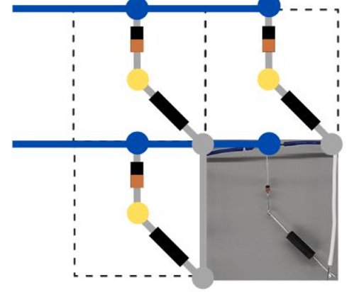

I was exhausted today. I had a sleepless night that was filled with taking care of some work. I thought that if I happened to stay awake for the entire day, my sleeping schedule just might get back on track. Aside from that, it was a great day. I was able to meet up with Elizabeth, Karen, Vincent, and Evelyn. Karen, Vincent, and Evelyn started working on their projects! I am so excited for them.
I continued working on Gambit by incorporating the limit switches within the programming. Once I completed that, I tried to begin working on my other projects that I had lined up. Specifically those that involve the use of python. But as I said. I tried. My coding environment was not coorperating with me, and hopefully it can get resolved sooner than later.
Tomorrow should be more loose, and hopefully productive. Only time will tell.
Gambit
Unlike yesterday, Gambit did not cause me any issues. The work I completed today pertained to getting limit switches incoorporated within the program responsible for moving the stepper motors that I have been using. Limit switches are buttons. Buttons that are typically placed at extremities of systems that uses a coordinate system. The limit switches allow for the program to understand where the edges of coordinate system are. For Gambit, these limit switches are used to understand where the origin is.
With a little work, the motors still perform as they do yesterday in which they respond to my input of the direction and rotation. However, after performing this action, the motors turn left until the first designated limit switch is pressed which would indicate that the electromagnet is as far left as designed. It then moves the motors in the upward direction until the second limit switch is pressed. This would indicate that the electromagnet is at a designated origin. From here, it then awaits its next commands. Which is pretty cool.
The next subsystem I plan on working on is that of sensing. Currently, the chessboard uses reed switches. Reed switches activate when they interact with a magnetic field. This is useful as the chess pieces that are moved using an electromagnet already have a magnet in them. This magnet within the chess pieces are used to activate the reed switches which can then be interpretted by the designed program. Below you can see the orientation of a set of reed switches that are placed throughout each of the 64 squares of the chessboard.
 A 2x2 Reed Switch MatrixTomorrow, I plan on testing another sensing mechanism that is typically used with magnets. This sensing mechanism is a hall effect sensor. Can't wait to tell you about it.
Personal Project 'Internship'
Vincent, Evelyn, and Karen made it out today. They came to start some work. And that they did. As mentioned in the beginning days with Kevin, I am wanting to give some guidance to a few students in hopes of having them learn a few things over the course of the summer.
Today they began the design phase of their projects and I am excited to see how it will turn out. Karen is working on a personal habit tracker. This will allow for the user to have their habits stare them down if they do not complete them. However, if they do complete it, they will be greeted by a nice green light and hopefully a great dopamine response.
Vincent is working on a split flap display. You know. The thing that spells words with a really satisfying click as half of the letters rotate about a spindle. It's pretty cool. I passed this project on to him because a friend, Eddie, thought it was cool and wanted to do it himself, but would need some help on it eventually. I thought this was a challenge that Vincent could have some fun with. We'll see soon enough.
Evelyn is working on a project that she brought up to me earlier this semester. As people are still social distancing, she wanted to create a product that could be placed at the center of tables within the engineering complex to show if one is open to people sitting with them or not. A very interesting product could come of this, and hopefully she learns a few things from it along the way.
I feel like I am being harsh on them at times as I critiqued their designs, but I know its for the better.
Habit Tracking
Today, I journaled, worked out, read, tracked my caloric intake, and worked on at least one of my personal projects. Today was a good day.
What I am thankful for
I am thankful for the technology I have available to me. It gives me the opportunity to be curious and seek new challenges daily.
The journey is the destination. Do More. - J.D.